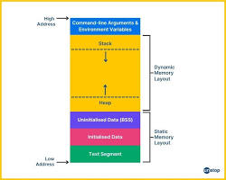

02. 변수와 자료형: 데이터 마법 상자
1. 변수(Variable)란?
변수는 데이터를 담기 위해 메모리에 이름을 붙인 '상자'입니다. 컴퓨터는 이 상자의 이름을 통해 메모리 주소를 일일이 기억하지 않고도 데이터를 쉽게 꺼내 씁니다.

▲ 변수: 메모리라는 거대한 창고에 라벨(이름)을 붙인 상자를 만드는 것
2. 자료형(Data Type)의 종류와 크기
상자의 크기가 담을 물건에 따라 다르듯, C언어도 데이터의 종류에 따라 메모리 크기를 다르게 사용합니다.
| 종류 | 키워드 | 크기(Byte) | 표현 범위 |
|---|---|---|---|
| 정수형 | int | 4 byte | -2,147,483,648 ~ 2,147,483,647 |
| 문자형 | char | 1 byte | -128 ~ 127 (또는 ASCII 코드) |
| 실수형 | float | 4 byte | 소수점 약 7자리까지 |
| 실수형(배정밀도) | double | 8 byte | 소수점 약 15자리까지 |
💡 왜 int의 범위가 저 숫자인가요?
4바이트는 32비트입니다. 2의 32승은 약 42억인데, 이를 반으로 나누어 음수와 양수를 표현하기 때문에 약 -21억에서 +21억 사이의 범위를 갖게 됩니다.
3. 아스키코드(ASCII)와 문자의 비밀
사실 컴퓨터는 'A'라는 글자를 모릅니다. 대신 숫자 65를 'A'라고 약속했을 뿐이죠. 이 약속된 표를 아스키코드라고 합니다.
숫자가 문자로 변하는 원리
동일한 메모리 값이라도 우리가 서식 지정자를 통해 어떻게 해석하느냐에 따라 결과가 달라집니다.
- %d: 메모리의 값을 '정수'로 해석해서 보여줘!
- %c: 메모리의 값을 '아스키코드 문자로' 해석해서 보여줘!
#include <stdio.h>
int main() {
char myChar = 'A'; // 내부적으로는 숫자 65 저장
printf("정수형 출력(%%d): %d\n", myChar); // 65 출력
printf("문자형 출력(%%c): %c\n", myChar); // A 출력
// 숫자 97을 넣고 문자로 출력하면?
int myNum = 97;
printf("97은 문자로 무엇일까? : %c\n", myNum); // a 출력
return 0;
}4. 문자열(String) 형
C언어에는 string이라는 기본 자료형이 없습니다. 대신 문자(char)의 배열을 사용합니다. 문자열의 끝을 알리기 위해 마지막에는 항상 눈에 보이지 않는 \0(널 문자)가 들어갑니다.
#include <stdio.h>
int main() {
// 문자열은 큰따옴표("")를 사용합니다.
char name[] = "Master";
printf("나의 이름은 %s입니다.\n", name); // %s는 문자열(String) 서식 지정자
return 0;
}5. ⚔️ 실전 예제: 용사 데이터 시트
#include <stdio.h>
int main() {
int hp = 2147483647; // int가 가질 수 있는 최대치
double exp = 98.456789; // 정밀한 경험치
char grade = 'S'; // 등급
char title[] = "초보 용사"; // 문자열
printf("[%s Status]\n", title);
printf("체력: %d / 등급: %c\n", hp, grade);
printf("경험치: %.4f%%\n", exp); // 소수점 4자리까지
return 0;
}